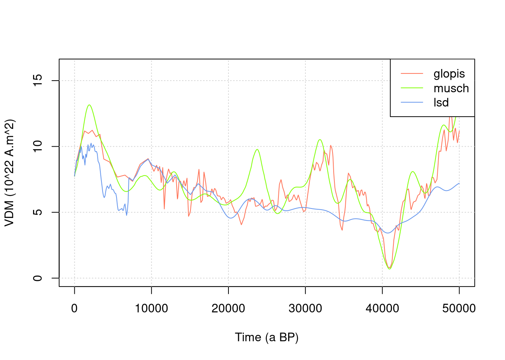

3.2 Time-dependent scalings
3.2.1 Definition of paleomagnetic variations
Time-dependent scaling factors allow to take into account the variations through time of the Earth magnetic field, which modulates the incoming cosmic ray flux. This is particularly important in exposure dating applications.
3.2.1.1 Virtual Dipole Moment
We need to first define a time series for the Virtual Dipole Moment (VDM) variation, using the get_vdm function.
Several paleomagnetic database can be used. The three options correspond to databases defined in Crep. We plot the three of them on the same graph.
time = seq(0,50e3,length.out = 1000) # time vector from 0 to 50 ka BP, with 1000 regularly spaced elements
#
plot(NA,xlim=range(time),ylim=c(0,16),xlab="Time (a BP)",ylab="VDM (10^22 A.m^2)")
grid()
# - Glopis
col1="coral1"
vdm1=get_vdm(time,model="glopis")
lines(time,vdm1/1e22,col=col1)
# 2 - Musch
col2 = "chartreuse"
vdm2=get_vdm(time,model="musch")
lines(time,vdm2/1e22,col=col2)
# 3 - lsd
col3 = "cornflowerblue"
vdm3=get_vdm(time,model="lsd")
lines(time,vdm3/1e22,col=col3)
legend("topright",c("glopis","musch","lsd"),col=c(col1,col2,col3),lty=1)
3.2.1.2 Cutoff Rigidity
Now we need to convert that into cutoff rigidity using vdm2rc function.
Such can be done using the following expression (Martin et al. (2017)): \[R_c = 14.3 \frac{M}{M_0}\cos^4 \lambda,\] where \(M\) is the moment of the Earth dipole field, \(M_0\) the 2010 reference value for \(M\) and \(\lambda\) the latitude.
This corresponds to the default model=elsasser54 in the vdm2rc function arguments.
A more complex formula proposed by Lifton, Sato, and Dunai (2014) can be used with model=lifton14.
lat = 40
rc1a = vdm2rc(vdm1,lat)
rc1b = vdm2rc(vdm1,lat,model="lifton14")
rc2a = vdm2rc(vdm2,lat)
rc2b = vdm2rc(vdm2,lat,model="lifton14")
rc3a = vdm2rc(vdm3,lat)
rc3b = vdm2rc(vdm3,lat,model="lifton14")
#
plot(NA,xlim=range(time),ylim=range(rc1a,rc2a,na.omit(rc3a)),xlab="Time (a BP)",ylab="Rc (GV)")
grid()
lines(time,rc1a,col=col1)
lines(time,rc1b,col=col1,lty=2)
lines(time,rc2a,col=col2)
lines(time,rc2b,col=col2,lty=2)
lines(time,rc3a,col=col3)
lines(time,rc3b,col=col3,lty=2)
legend("bottomleft",c("glopis","musch","lsd","elsasser54","lifton14"),col=c(col1,col2,col3,"black","black"),lty=c(1,1,1,1,2),cex=0.5)
TODO change the latitude
latand observe the influence on \(R_c\)
3.2.2 Lal/Stone modified scaling (lm)
Once we have a \(R_c\) time series we can compute the lm scaling factors using the scaling_lm function.
For that we will only use one elevation (z=0), so we recompute the atmospheric pressure.
We plot the corresponding time series, as well as the value of st scaling factor for reference.
P = atm_pressure(alt=0,model="stone2000")
lm = scaling_lm(P,rc1a)
plot(time,lm,type="l",xlab="Time (a BP)",ylab="Spallogenic lm scaling factor")
abline(h=scaling_st(P,lat)$Nneutrons,lty=2)
TODO Explore the variations of the scaling factor by using various values for elevation
alt, and different \(R_c\) time-series. Look for the differences with the time-independantstscaling